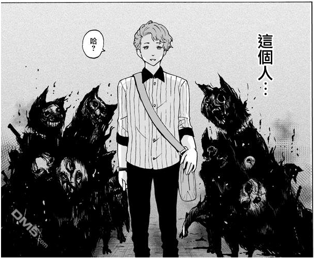
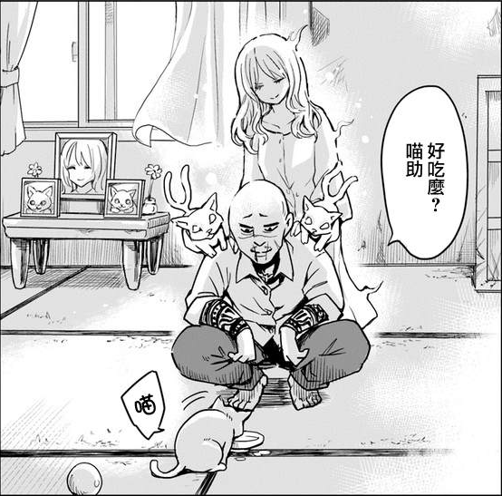
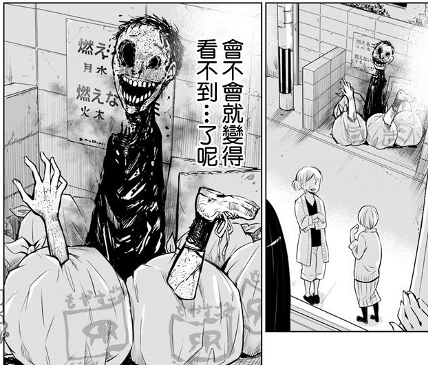

第三章 凝视深渊
当你凝视深渊，深渊也将凝视你。
看见了就是看见了，无视也没有用。
信息汇入，便有了认知，认知会左右选择。
终究，硬不下心肠啊，见子……
坐在公园的长椅上，四叶一边和见子还有小華吃着刚刚买的甜甜圈，一边一起等着想要收养猫咪的好心人出现。
这是在来公园的路上捡到的猫，虽然小華想要养，但是她居住的公寓是禁止养宠物的，所以他们只能找人来领养小猫，领养的公共已经的网上发布了，直到天黑之前，她们几个都会在这个公园等着想要领养猫的人出现。
实际上，刚刚她们拒绝了一个提出想要养猫的腼腆有点小帅的男子，是见子回绝的，虽然看上去面善，但是，实际上，见子看见有一大堆的动物怨灵缠着这个男子不放，虽然见子也不知道怨灵、恶灵、灵等等的区别，但是有一点是可以肯定的，小猫不应该交给这个男人！
总觉得自己还不如见子呢……
四叶咬着甜甜圈仰望着湛蓝的天空，那些动物的怨灵，只有动物被虐杀后才会产生的，也就是说，那个男的，是衣冠禽兽，表面斯文，背地里是个虐待动物的变态。
然而，四叶却不能对那个男的做些什么，不能对普通人出手，公会对这种事管理的倒也不是很严苛，不弄出人命怎么都没关系，顶多回去被批一顿，但是，在不能消除那个男人的条件下，她还能干什么？打一顿？有意义吗？
四叶能做的，仅仅是在原本缠在小猫身上的恶灵转移到那个男人身上的时候把那个恶灵打爆。
恶灵，是会害人的，但是，并非只有被纠缠的本人，甚至会害被缠上的人身边的人或者动物，本就是动物虐待狂的变态配上恶灵，简直是干柴遇烈火，在弄死那个男的前，估计还会大闹一场。
所以，四叶能做的，仅有……去“保护”那个变态！
好想让那家伙人间蒸发啊！
“那个，你一直看着为什么干什么？”小華警惕的看着稍远一点一直看着她们的光头，面相凶恶，一看就不是什么好人，手机揣在口袋里，小華已经准备好随时报警。
“我可以收养它吗？”
“不……”
“可以哦。”
在小華想要拒绝的时候，见子很干脆的同意了面相凶恶的光头老兄的请求。
四叶瞄了眼那个光头，龙之力加持在眼睛上，她所看见的，是两只猫又的灵，一左一右的趴在他的肩膀上，与那位面善的变态周身都是混沌污秽的怨灵不一样，那是非常干净纯粹的灵，是守护灵，在光头的背后，还有一名少女安静的守候着他。
是个好人呢……
“虽然看上去凶凶的，但是我觉得，他是个好人。”四叶对着犹豫的小華说道，他站在见子这一边，因为他和见子看见了一样的东西。
人不可貌相。
就像是，谁又能想到，走在回家的路上，漫不经心的吃着甜点的‘少女’，其实是个男的呢。
随手将缩在垃圾站里的恶灵打爆，将甜点剩下的包装纸也丢在了垃圾站里，抬头看了眼垃圾站对面的屋子，四叶再次走动，走进了那屋子隔壁的房子里。
每天起床拉开窗帘看见好像凶杀弃尸现场一样的垃圾站，见子也真是辛苦了呢，老实说，即使和灵打过很多次交道的四叶搞不清楚这些脑子浑浑噩噩的灵在搞什么，非要把自己真的非常恶心，像守护灵一样把自己弄得干干净净的不好吗？
“咦？四叶？”
“诶？见子，你住这里吗？”
在走进住所庭院的时候，四叶听到熟悉的声音惊讶的抬起头看着打开看着这边的见子。
“嗯，真巧啊，没想到新搬来的邻居是四叶啊。”见子笑着说道。
“我也没想到会和见子当邻居。”四叶不自然的笑了笑，这是谎言，四叶不擅长说谎，但是，职业操守的加持下，四叶也不会露出什么破绽。
她和见子是邻居，这是刻意安排好的事项，因为租房可能会出现额外的麻烦事，所以四叶是直接把见子隔壁的房子买下了，一直以来，公会给的报酬可是很充足的，就算任务结束后房子卖不出去也无所谓。
“稍后我会拜访府上的，今后还请多多关照。”四叶摆了摆手，然后走进了屋子。
这个国家，在搬家的时候，似乎有问候邻居的礼仪，这是四叶早就知道的事情，所以之前四叶才会和见子分开，那是去超市买礼物了，这也正和四叶的心意，这样，正好想要去帮见子‘打扫’下屋子……虽然悄悄的潜入也能做，但总觉得怪怪的
“不过，首选，打算了自己的房子吧！”
放下挂在手臂上的包装袋，四叶拍了拍手，然后从兜里拿出一支粉笔，在玄关处画了个涂鸦，然后又跑到屋子里，在屋子的各处画上差不多的涂鸦。
这个房子被之前的主人闲置了好久，虽然一直没有住人，但也不算是空置，因为有无数大大小小的灵在这里住着。虽然有些抱歉，但是习惯住自家学校那种清净之地的四叶，不习惯自己的屋里有那些倒人胃口的灵。
恶灵打爆，怨灵驱逐，幽灵滚蛋，迷途的守护灵可以睡客厅，顺便找个自然之灵放卧室当空调，节能环保。
“完美！”
打了个响指，高效的公会白袍很快的就把自己的暂住地打扫干净，并在四方刻下御守的印记拒绝乱七八糟的灵再进屋子，在有灵感的人眼里，这里俨然已经是个自然气息充沛，不存污秽的清净之地了，也就是所谓的圣域。
“接下来，就是去隔壁拜访了。”拿出准备好的礼物，四叶来到玄关穿上了鞋子走了出去。
虽然给屋子做了大改造，但是四叶并不担心会被见子发现，因为见子的眼睛能看到的东西方向不一样，能看到灵，但看不到气，顶多就是来这边玩的时候会觉得清新舒适而已。
【我又出现了……去山上外公家超无聊的，同辈就我一个，我跟长辈没有共同话语，所以，我下山回家码字了……灵感少女以前看过一集，后来不知道为什么没有看了，最近补上……所以，没有人意识到，本卷的主角，是月姬的上辈子，月姬的上辈子是男的，天宫四叶是主角，所以，主角是真·女装大佬吗？】
【看不到图片的话，似乎可以从间贴进去看小图，因为图片不能是发布的时候就上传，最好不要着急看，刷新本章】